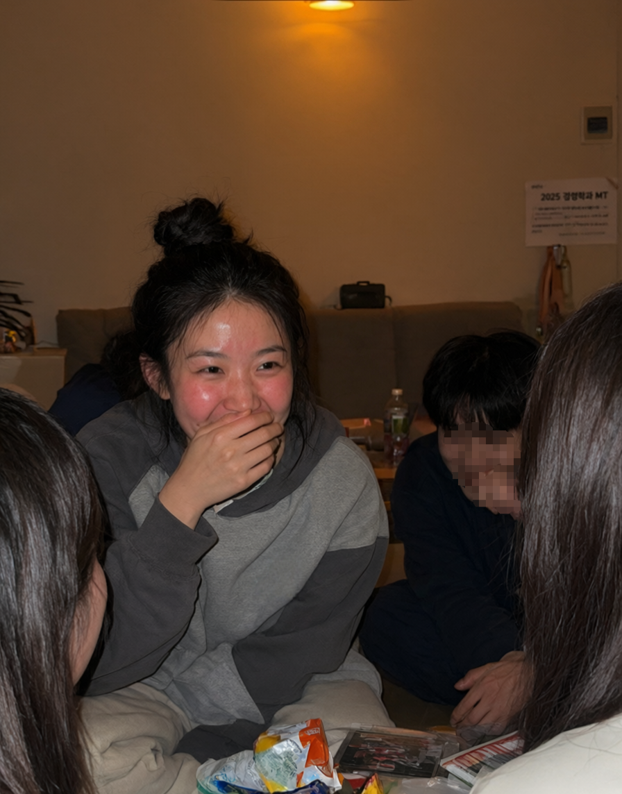
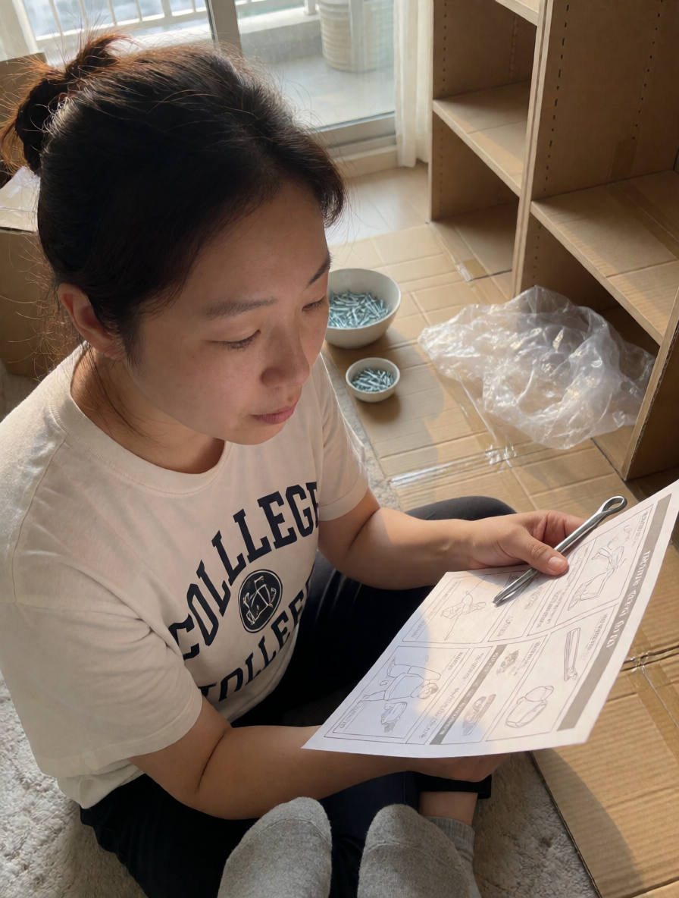
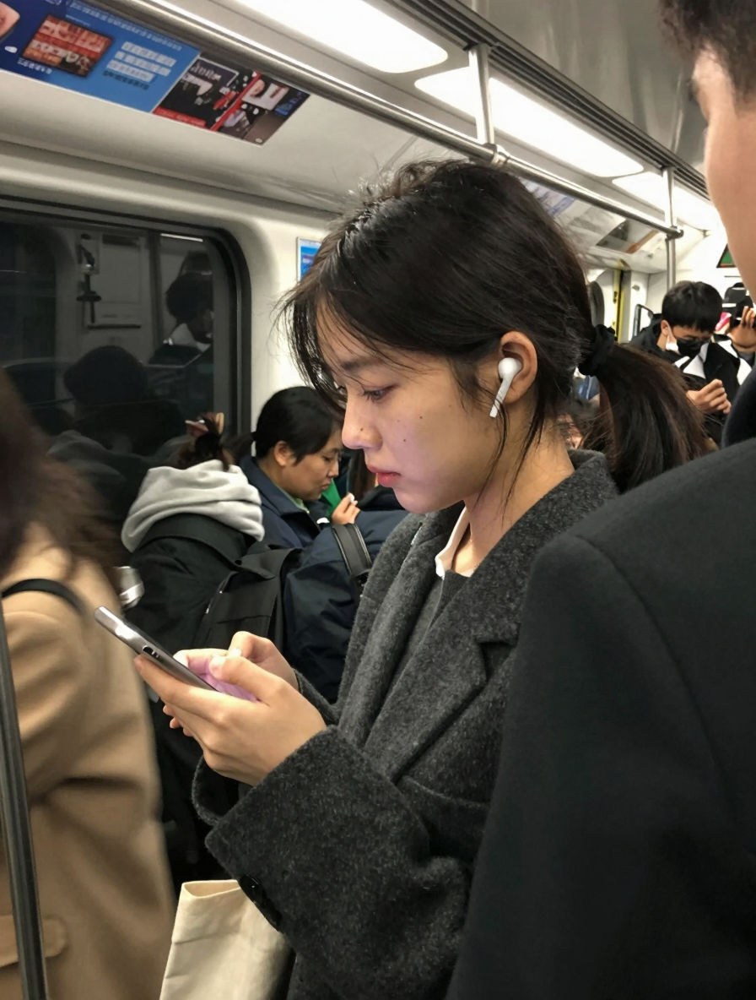

답은 그게 잘 팔리니까 이다.
아래의 이미지처럼 평범하거나 못생긴 얼굴도 얼마든지 찍을 수 있다


어떤가. AI 짤에 흥미가 생기는가?
전혀 생기지 않았을 것이다.
그러면 여기서 외모 레벨을 조금만 올려보면 어떨까?

아까보다 호기심이 조금 올라간 게 느껴지지 않는가?
그럼 여기서 외모 레벨을 더 올려서 AI티가 좀 나게 만들어보면 어떨까?
흥미가 아주 많이 올라간게 느껴진다면
이제 당신도 "왜 AI짤은 항상 그밥에 그나물" 인지 알게 됐을 것이다.
그게 가장 잘 나가는 메뉴여서 그렇다.
댓글
수집 당시 댓글 1개
비정상헬린이 · 4 분 전